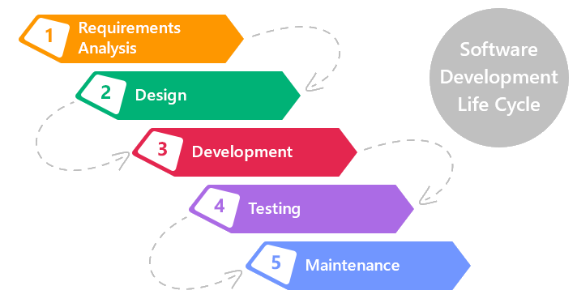
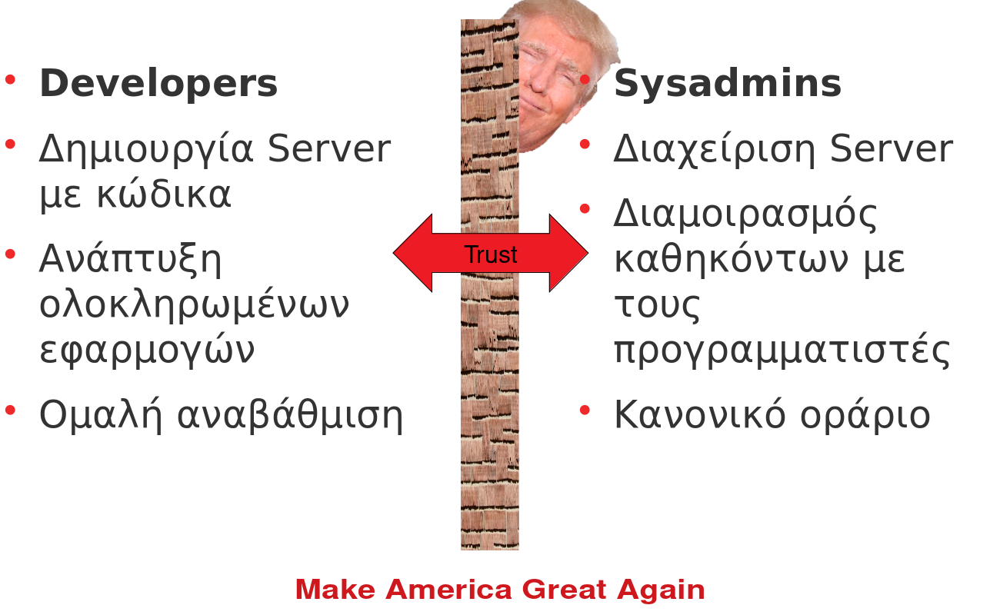
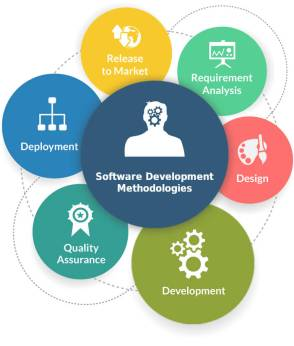
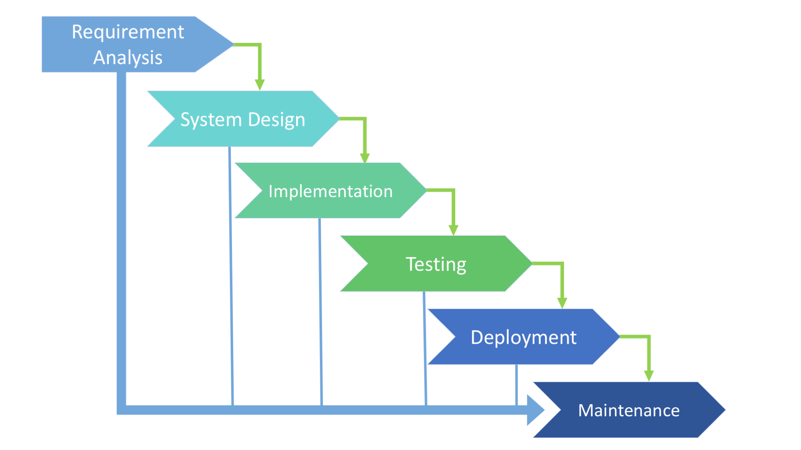
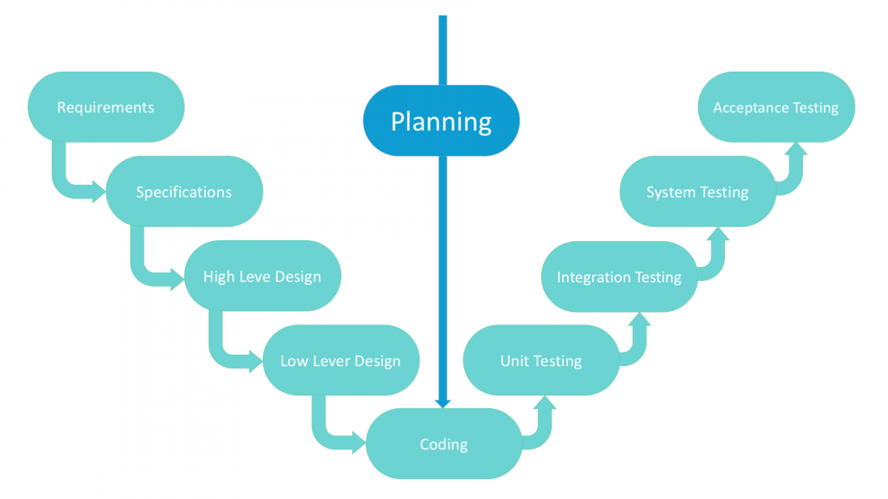
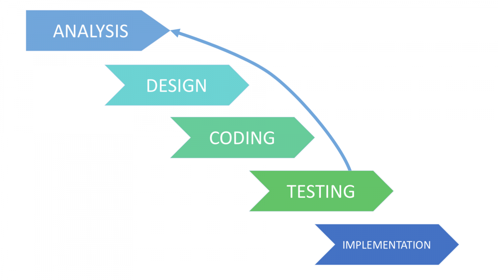
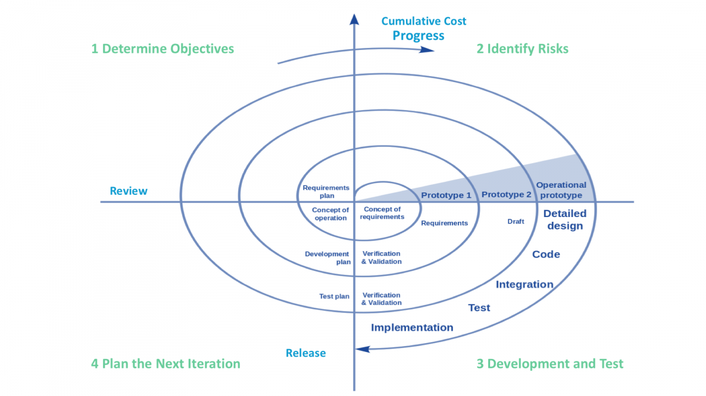
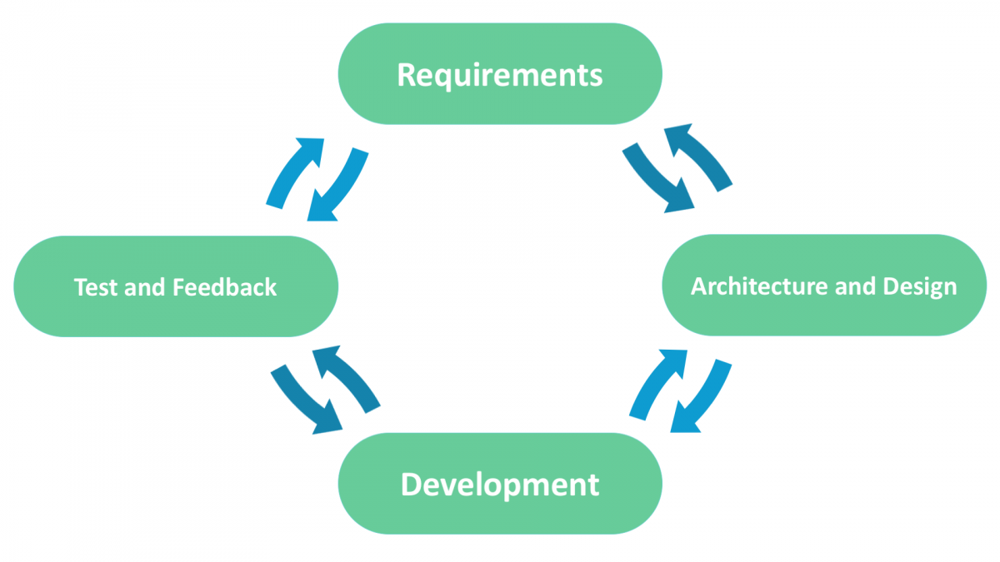
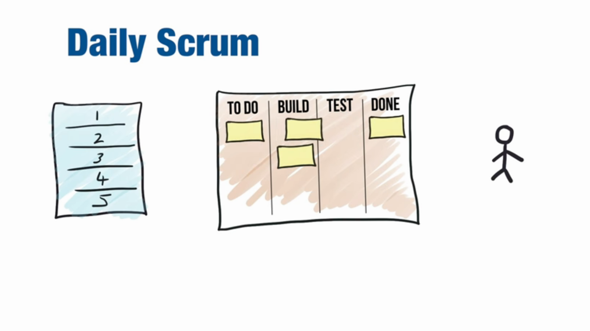
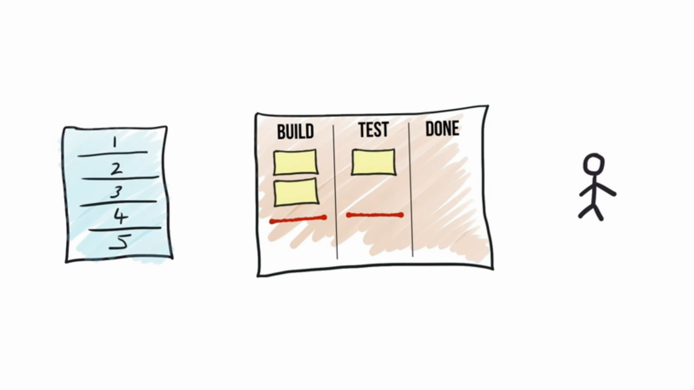

Κύκλος ζωής ανάπτυξης λογισμικού
Αλεξάνδρειο ΤΕΙ Θεσσαλονίκης – Πληροφοριακά Συστήματα 1 – 3η Παρουσίαση
Περιεχόμενα
- Τι είναι το SDLC;
- Requirements Analysis
- Design
- Development
- Testing
- Documentation???
- Maintenance
- DevOps
- Τι είναι το DevOps;
- Γιατί χρειαζόμαστε το DevOps;
- Πηγές για το DevOps
- SDLC MODELS
- Waterfall Model
- V-Shaped Model
- Iterative Model
- Spiral Model
- Agile model
- Scrum
- Kanban
- Συμπέρασμα4
Τι είναι το SDLC;
- SDLC (Software Development Life Cycle) – Κύκλος ζωής ανάπτυξης λογισμικού.
- Είναι μια δομή που την ακολουθεί μια ομάδα προγραμματιστών.
- Αποτελείται από ένα λεπτομερές σχέδιο που περιγράφει τον τρόπο ανάπτυξης, συντήρησης και αντικατάστασης συγκεκριμένου λογισμικού.
- Ο κύκλος ζωής ορίζει μια μεθοδολογία για τη βελτίωση της ποιότητας του λογισμικού και της συνολικής διαδικασίας
- Waterfall
- V-Shaped
- Iterative
- Είναι ένα framework όπου προσδιορίζει τα βήματα που πρέπει να γίνουν σε κάθε επίπεδο με έναν ιεραρχικό τρόπο 
Requirements Analysis
- Αφορά κυρίως τους διαχειριστές του έργου και τα άτομα που θα το χρησιμοποιήσουν.
- Συνεδριάσεις με διαχειριστές, ενδιαφερόμενους και χρήστες πραγματοποιούνται προκειμένου να προσδιοριστούν οι απαιτήσεις
- Ποια δεδομένα θα πρέπει να βγάζει το σύστημα
- Ποια δεδομένα θα πρέπει να παίρνει το σύστημα
- Ποια άτομα θα χρησιμοποιούν το σύστημα
- etc
- Μετά τη συλλογή των απαιτήσεων αναλύονται αυτές οι απαιτήσεις για την εγκυρότητά τους και μελετάται επίσης η δυνατότητα ενσωμάτωσης των απαιτήσεων στο σύστημα.
- Δημιουργείται ένα έγγραφο απαιτήσεων το οποίο εξυπηρετεί τον σκοπό καθοδήγησης για την επόμενη φάση του μοντέλου.
Design
- Σε αυτή τη φάση ο σχεδιασμός του συστήματος και του λογισμικού προετοιμάζεται με βάση των απαιτήσεων που μελετήθηκαν στην πρώτη φάση.
- Ο σχεδιασμός του συστήματος βοηθάει στον προσδιορισμό των απαιτήσεων υλικού και συστήματος, επίσης βοηθά στον καθορισμό της συνολικής αρχιτεκτονικής του συστήματος.
- Οι προδιαγραφές σχεδιασμού του συστήματος χρησιμεύουν ως είσοδος για την επόμενη φάση του μοντέλου.
Development
- Σε αυτό το στάδιο δημιουργείται ο κώδικας
- Οι προγραμματιστές χωρίζονται σε ομάδες (αν είναι εφικτό), έτσι ώστε να ασχοληθούν με ένα τμήμα του προγράμματος ανά ομάδα για να υπάρχει μεγαλύτερη αποδοτικότητα και λιγότερα σφάλματα
Testing
- Μετά την ανάπτυξη του κώδικα δοκιμάζεται με βάση τις απαιτήσεις για να διασφαλιστεί ότι το προϊόν επιλύει πραγματικά τις ανάγκες που αντιμετωπίζονται και συγκεντρώνονται κατά τη φάση των απαιτήσεων.
- Κατά τη διάρκεια αυτής της φάσης γίνονται όλοι οι τύποι λειτουργικών δοκιμών, όπως δοκιμές μονάδων, δοκιμές ολοκλήρωσης, δοκιμές συστημάτων, δοκιμές αποδοχής καθώς και μη-λειτουργικές δοκιμές.
Documentation???
- Κάθε βήμα του έργου τεκμηριώνεται για μελλοντική αναφορά και για τη βελτίωση του λογισμικού στη διαδικασία ανάπτυξης.
- Η τεκμηρίωση του σχεδιασμού μπορεί να περιλαμβάνει τη γραφή της διεπαφής προγραμματισμού εφαρμογών
Maintenance
- Μόλις οι πελάτες αρχίσουν να χρησιμοποιούν το αναπτυγμένο σύστημα τότε τα πραγματικά προβλήματα εμφανίζονται και πρέπει να λυθούν από καιρό σε καιρό.
- Αυτή η διαδικασία όπου λαμβάνεται, μέριμνα για το αναπτυγμένο προϊόν είναι γνωστή ως συντήρηση.
DevOps

Τι είναι το DevOps;
- Σημαίνει κυριολεκτικά Developers και Operations.
- Το νόημα είναι να δουλέψουν μαζί οι developers και οι sysadmins ώστε να επωφεληθούν οι επιχειρήσεις.
- Ο στόχος είναι να μειωθεί η “τριβή” και να αυξηθεί η ταχύτητα.
Γιατί χρειαζόμαστε το DevOps;
Πηγές για το DevOps
- Website:
- Podcast:
SDLC MODELS
- Waterfall Model
- V-Shaped Model
- Iterative Model
- Spiral Model
- Agile model
- Scrum
- Kanban
Waterfall Model
- Η διαδικασία ανάπτυξης μοιάζει με τη ροή ενός καταρράκτη.
- Βαθμιαία εκτέλεση όλων των σταδίων.
- Αυτή η διαδικασία είναι αυστηρά τεκμηριωμένη και προκαθορισμένη με χαρακτηριστικά που αναμένονται.
| ADVANTAGES | DISADVANTAGES |
| Απλό στη χρήση και κατανόηση | Το λογισμικό είναι έτοιμο μόνο μετά το τέλος του τελευταίου σταδίου |
| Απλή διαχείριση χάρη στην ακαμψία της: κάθε φάση έχει καθορισμένο αποτέλεσμα και ανασκόπηση της διαδικασίας | Υψηλοί κίνδυνοι και αβεβαιότητα |
| Τα στάδια ανάπτυξης ξεκινούν ένα προς ένα | Δεν είναι η καλύτερη επιλογή για σύνθετα και αντικειμενοστρεφή έργα |
| Ιδανικό για μικρά ή μεσαίου μεγέθους έργα, όπου οι απαιτήσεις είναι σαφείς και όχι αμφιλεγόμενες | Ακατάλληλο για τα μακροπρόθεσμα έργα |
| Εύκολος προσδιορισμός των βασικών σημείων στον κύκλο ανάπτυξης | Η πρόοδος του επιπέδου είναι δύσκολο να μετρηθεί ενώ βρίσκεται ακόμη σε ανάπτυξη/td> |
| Εύκολη ταξινόμηση και προτεραιότητα εργασιών | Η ολοκλήρωση γίνεται στο τέλος, πράγμα που δεν δίνει τη δυνατότητα να προσδιοριστεί εκ των προτέρων τα προβλήματα |
Χρησιμοποιείται όταν:
- Οι απαιτήσεις τεκμηριώνονται επακριβώς
- Ο ορισμός του προϊόντος είναι σταθερός
- Η στοίβα τεχνολογιών είναι προκαθορισμένη και δεν το καθιστά δυναμικό
- Δεν υπάρχουν αμφιλεγόμενες απαιτήσεις
- Το έργο είναι σύντομο
V-Shaped Model
- Είναι μια επέκταση του κλασικού μοντέλου καταρράκτη και βασίζεται στη σχετική δοκιμαστική φάση για κάθε στάδιο ανάπτυξης.
- Πρόκειται για ένα πολύ αυστηρό μοντέλο και το επόμενο στάδιο ξεκινά μόνο μετά την προηγούμενη φάση.
- Καλείται επίσης το μοντέλο “Validation and verification”.
- Κάθε στάδιο έχει τον τρέχοντα έλεγχο διαδικασίας, για να βεβαιωθεί ότι είναι δυνατή η μετατροπή στο επόμενο στάδιο.
| ADVANTAGES | DISADVANTAGES |
| Κάθε στάδιο μοντέλου σχήματος V έχει αυστηρά αποτελέσματα, ώστε να είναι εύκολα ελεγχόμενο | Έλλειψη ευελιξίας |
| Η δοκιμή και η επαλήθευση πραγματοποιούνται στα αρχικά στάδια | Κακή επιλογή για τα μικρά έργα |
| Καλό για τα μικρά έργα, όπου οι απαιτήσεις είναι στατικές και σαφείς | Σχετικά μεγάλοι κίνδυνοι |
Χρησιμοποιείται όταν:
- Για τα έργα όπου απαιτείται ακριβής δοκιμή προϊόντος
- Για τα μικρά και μεσαία έργα, όπου οι απαιτήσεις είναι αυστηρά προκαθορισμένες
- Οι μηχανικοί με τα απαιτούμενα προσόντα, ειδικά οι δοκιμαστές, είναι εύκολα προσβάσιμοι.
Iterative Model
- Δεν χρειάζεται τον πλήρη κατάλογο των απαιτήσεων πριν ξεκινήσει το έργο.
- Η διαδικασία ανάπτυξης μπορεί να ξεκινήσει με τις απαιτήσεις στο λειτουργικό μέρος, το οποίο μπορεί να επεκταθεί αργότερα.
- Η διαδικασία είναι επαναλαμβανόμενη, επιτρέποντας τη δημιουργία νέων εκδόσεων του προϊόντος για κάθε κύκλο.
- Κάθε επανάληψη (η οποία διαρκεί από δύο έως έξι εβδομάδες) περιλαμβάνει την ανάπτυξη ενός ξεχωριστού συστατικού του συστήματος και μετά από αυτό το στοιχείο προστίθεται στο λειτουργικό που αναπτύχθηκε νωρίτερα.
| ADVANTAGES | DISADVANTAGES |
| Ορισμένες λειτουργίες μπορούν να αναπτυχθούν γρήγορα στην αρχή του κύκλου | Το επαναληπτικό μοντέλο απαιτεί περισσότερους πόρους από το μοντέλο καταρράκτη |
| Η παράλληλη ανάπτυξη μπορεί να εφαρμοστεί | Κακή επιλογή για τα μικρά έργα |
| Η πρόοδος είναι εύκολα μετρήσιμη | Απαιτείται σταθερή διαχείριση |
| Ευκολότερα στάδια δοκιμής και εντοπισμού σφαλμάτων | Η διαδικασία είναι δύσκολο να διαχειριστεί |
| Είναι ευκολότερο να ελέγχετε τους κινδύνους καθώς οι εργασίες υψηλού κινδύνου ολοκληρώνονται πρώτα | Οι κίνδυνοι ενδέχεται να μην προσδιορίζονται πλήρως ακόμη και στο τελικό στάδιο του σχεδίου |
| Ευελιξία και ετοιμότητα για τις αλλαγές στις απαιτήσεις | Η ανάλυση των κινδύνων απαιτεί τη συμμετοχή ειδικών υψηλής ειδίκευσης |
| Τα προβλήματα και οι κίνδυνοι που ορίζονται μέσα σε μία επαναληπτική πορεία μπορούν να αποφευχθούν κατά τα επόμενα σπριντ | Ζητήματα με αρχιτεκτονική ή σχεδιασμό μπορεί να προκύψουν επειδή δεν προβλέπονται όλες οι απαιτήσεις κατά το σύντομο στάδιο του σχεδιασμού |
Χρησιμοποιείται όταν:
- Οι απαιτήσεις για το τελικό προϊόν είναι αυστηρά προκαθορισμένες
- Εφαρμόζεται στα έργα μεγάλης κλίμακας
- Το κύριο έργο είναι προκαθορισμένο, αλλά οι λεπτομέρειες μπορεί να προχωρήσουν με το χρόνο
Spiral Model
- Συνδυάζει την αρχιτεκτονική και τα πρωτότυπα στα στάδια.
- Πρόκειται για ένα συνδυασμό των μοντέλων Iterative και Waterfall, με τη σημαντική έμφαση στην ανάλυση κινδύνου.
- Kαθορίζει τη σωστή στιγμή για να πάει από το ένα στάδιο στο επόμενο στάδιο.
- Τα προκαθορισμένα χρονικά πλαίσια συνιστώνται ως λύση στο ζήτημα αυτό.
- Η μετάβαση στο επόμενο στάδιο γίνεται σύμφωνα με το σχέδιο, ακόμη και αν δεν έχει ακόμη ολοκληρωθεί η εργασία στο προηγούμενο στάδιο.
- Το σχέδιο εισάγεται με βάση τα στατιστικά στοιχεία που έλαβε κατά τη διάρκεια των προηγούμενων έργων, ακόμη και από την εμπειρία του προσωπικού.
| ADVANTAGES | DISADVANTAGES |
| Ο κύκλος ζωής χωρίζεται σε μικρά τμήματα και, εάν η συγκέντρωση κινδύνου είναι υψηλότερη, η φάση μπορεί να ολοκληρωθεί νωρίτερα για να αντιμετωπιστούν οι “θεραπείες” | Μπορεί να είναι αρκετά ακριβό |
| Η διαδικασία ανάπτυξης είναι τεκμηριωμένη αλλά κλιμακούμενη στις αλλαγές | Ο έλεγχος των κινδύνων απαιτεί τη συμμετοχή των εξειδικευμένων επαγγελματιών |
| Η δυνατότητα κλιμάκωσης επιτρέπει την πραγματοποίηση αλλαγών και την προσθήκη νέων λειτουργιών ακόμα και στα σχετικά αργά στάδια | Μπορεί να είναι αναποτελεσματική για τα μικρά έργα |
| Οι χρήστες μπορούν να επισημάνουν τα ελαττώματα πριν ολοκληρωθεί ένα στάδιο | Ο μεγάλος αριθμός των ενδιάμεσων σταδίων απαιτεί υπερβολική τεκμηρίωση |
Χρησιμοποιείται όταν:
- Ο πελάτης δεν είναι σίγουρος για τις απαιτήσεις
- Σημαντικές αλλαγές αναμένονται κατά τη διάρκεια του κύκλου ανάπτυξης
- Για τα έργα με μεσαίο ή υψηλό επίπεδο κινδύνου, όπου είναι σημαντικό να προληφθούν αυτοί οι κίνδυνοι
- Το νέο προϊόν που θα πρέπει να κυκλοφορήσει σε λίγα στάδια θα πρέπει να έχει αρκετούς πελάτες για feedback
Agile model
- Μετά από κάθε επανάληψη ανάπτυξης, ο πελάτης είναι σε θέση να δει το αποτέλεσμα και να καταλάβει εάν είναι ικανοποιημένος με αυτό ή δεν είναι.
- Αυτό είναι ένα από τα πλεονεκτήματα του ευέλικτου μοντέλου κύκλου ζωής ανάπτυξης λογισμικού.
- Ένα από τα μειονεκτήματά του είναι ότι με την απουσία καθορισμένων απαιτήσεων είναι δύσκολο να εκτιμηθούν οι πόροι και το κόστος ανάπτυξης.
- Ο ακραίος προγραμματισμός είναι μια από την πρακτική χρήση του ευέλικτου μοντέλου.
- Η βάση αυτού του μοντέλου συνίσταται σε σύντομες εβδομαδιαίες συναντήσεις - Sprints που αποτελούν μέρος της προσέγγισης Scrum.
| ADVANTAGES | DISADVANTAGES |
| Οι διορθώσεις λειτουργικών απαιτήσεων εφαρμόζονται στην αναπτυξιακή διαδικασία για την ανταγωνιστικότητα | Δυσκολίες στη μέτρηση του τελικού κόστους εξαιτίας μόνιμων αλλαγών |
| Το έργο χωρίζεται από σύντομες και διαφανείς επαναλήψεις | Η ομάδα πρέπει να είναι άκρως επαγγελματική και προσανατολισμένη στον πελάτη |
| Οι κίνδυνοι ελαχιστοποιούνται χάρη στη διαδικασία της ευέλικτης αλλαγής | Οι νέες απαιτήσεις μπορεί να έρχονται σε αντίθεση με την υπάρχουσα αρχιτεκτονική |
| Γρήγορη απελευθέρωση της πρώτης έκδοσης προϊόντος | Με όλες τις διορθώσεις και αλλαγές υπάρχει πιθανότητα το έργο να υπερβεί τον αναμενόμενο χρόνο |
Χρησιμοποιείται όταν:
- Οι ανάγκες των χρηστών αλλάζουν δυναμικά
- Μικρότερες τιμές για τις αλλαγές που έγιναν λόγω των πολλών επαναλήψεων
- Σε αντίθεση με το μοντέλο Waterfall, απαιτεί μόνο αρχικό σχεδιασμό για να ξεκινήσει το έργο
Scrum
Kanban
Συμπέρασμα
- Κατά τα έτη της εξέλιξης του SDLC, αναπτύχθηκαν διαφορετικά μοντέλα από το βασικό μοντέλο καταρράκτη για να καλύψουν μια τεράστια ποικιλία αναπτυξιακών απαιτήσεων και προσδοκιών.
- Δεν υπάρχει μόνο ένα κατάλληλο μοντέλο για όλα τα έργα. Ακόμη και από την πρώτη ματιά, ο Agile πολλαπλών χρήσεων δεν μπορεί να χρησιμοποιηθεί ευρέως εξαιτίας της απροετοίμασίας κάποιων πελατών για την κλιμάκωση του προϋπολογισμού. Τα μοντέλα SDLC συχνά διασταυρώνονται στις λύσεις και είναι ιδιαίτερα παρόμοια.
Ευχαριστούμε για την προσοχή σας
Πηγές
- SDLC Models:
- Redhat Podcast:
- Agile
- Devops